来源：https://tnipr0o2tc.feishu.cn/docx/Jbrzdvp7doRprlxlPAJcvYxHnfd
hello，大家好，我是七天假，生财航海家。18年开始做互联网产品经理，是一款百万流量的产品负责人。我在2022年开始裸辞创业，专注小红书平台。
写过两篇文章，均获得了精华帖，具体可以看：
做小红书半年盈利20w+，切入品牌视角做流量实现爆商单：https://t.zsxq.com/0caJoN41h
这篇文章，讲讲：
1、我是如何走上小红书商单变现之路？
2、又如何做到到月入10万的？
3、为什么现在收入归零，我做错了什么？
起因是我在小红书分享自己家里的装修经验，然后无意中一篇帖子爆了，然后就开始一发不可收拾...
当时做到了一个什么程度呢？
半年时间小红书粉丝量2W+，收获赞藏30W+，变现超过10W+。
总计发文80篇，千赞以上笔记27篇，千赞率为33.7%，百赞以上笔记75篇（含千赞），百赞率93.7%。
因为这个数据，引来了超过100个品牌的合作邀请。
但是精力有限，拒绝了很多，后来只合作自己喜欢的品牌，会他们多次合作。有些品牌害怕我跟他们的竞品合作，还会签署全年的合作协议~~~
这是当时的一些截图和数据
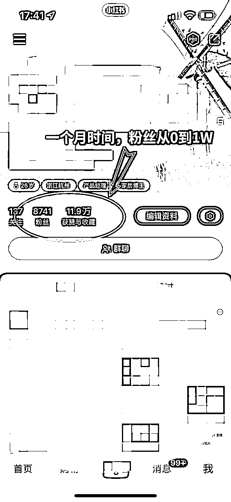
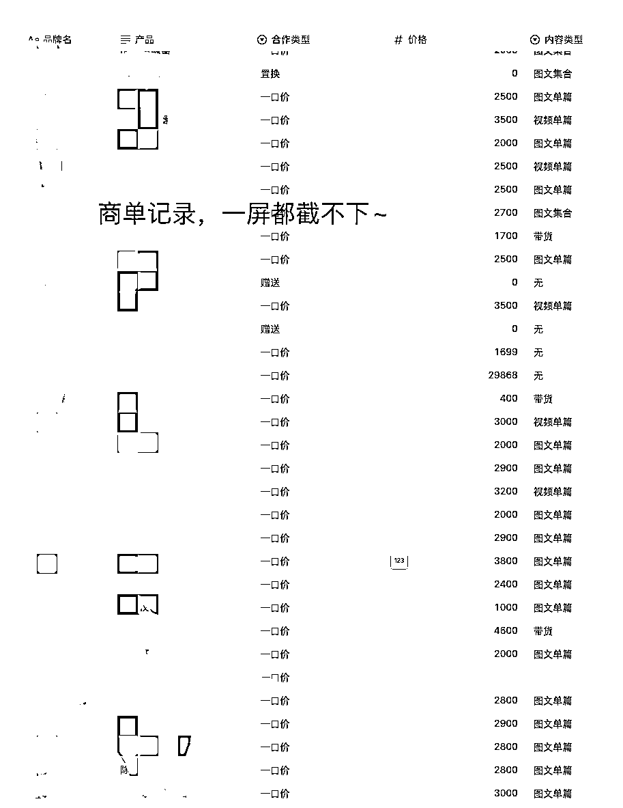
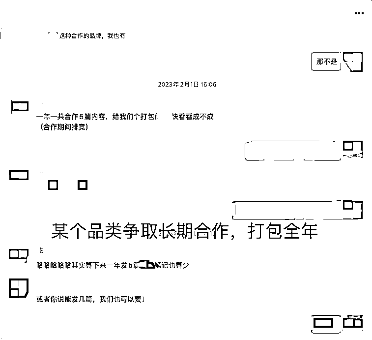
现在回想起来，我其实是无意中踩中了小红书当时的几个风口：
22-23年的时候，正是小红书c端用户流量开始起量，但是创作者/商家还没有大批量跟进的时间点。
我为什么能把装修账号做起来？根本原因是，我当时真的在装修，我分享的，真的是我的所见所闻，所思所想，并且毫无保留。用户其实不傻，用户能感知到这个博主到底是忽悠人的营销号，还是真的在分享干货。
小红书本身又是一个活人感很强的社区，所以那段时间，涨粉涨的飞快～
那段时间，被突如其来的流量和品牌方打乱了阵脚，也迷失在每篇2-3k的商单当中，犯了一些现在回想起来不该犯的错误：
可能确实是，站在风口，猪也能飞起来。
我当时不是没有意识到需要把这套赚钱的路径放大，但是我很懒！！！我把成功经验，复制到了2-3个账号上，也起号成功，并且开始爆商单。
这里的重点应该是，只复制了2-3个账号。嗯😐，当时应该复制20-30，甚至200个的，但是我没有...
这里顺带分享下我的起号方法。在生财，关于如何在小红书起号的方法有很多，我聊点那些帖子没聊到，或者没说透的东西。
这里的人设，指的不是说，给自己安排一个身份，把简介编一下这么简单。而是可以把你这个人设要经历的所有的事，跟用户相关，对用户有帮助的，都可以分享一下。加强人设，让用户共情。
大家都知道，小红书起号，可以发一些互动贴。但是互动贴其实也不是乱发的，也是需要根据你的人设进行发。
我拿装修账号举例，我一般是怎么起号的：
1、可以从买房开始，社会现象层面的互动贴话题，比如《杭州买房，男方希望我一起出首付，这种男朋友还能要吗？》《杭州xxx小区好，还是xxx好？》
2、买完房，再到装修《一人说一个你们装修踩的坑》、《一人说一个你们装修中最后悔的决定》
3、然后就到选装修公司了，准备怎么装修，找了哪些装修公司，发现里面的套路是什么，这些都可以总结。教姐妹们避坑。
4、这种装修前准备了解的帖子发完后，正式开始装修，就可以发自己做的装修攻略贴了。分享自己装修过程中，踩了哪些坑，学到了什么，总结了什么，给姐妹们准备了什么...等等。
这4个过程，爆2-3篇，基本上就起号成功了，人群会很精准，吸粉率也很高，因为大家看到的，是你这个活生生的人，陪你一起从买房开始，到选装修公司，到装修踩坑，再到顺利入住美美的家。
我发现基本没有人讲过小红书搜索框下面的：小红书热点。
但是，这个东西真的是小红书实时的热点事件的数据，时间不会超过24小时。是最新的，大家都在关注的东西。我建议小红书创作者每天都逛至少2-3遍小红书热点。
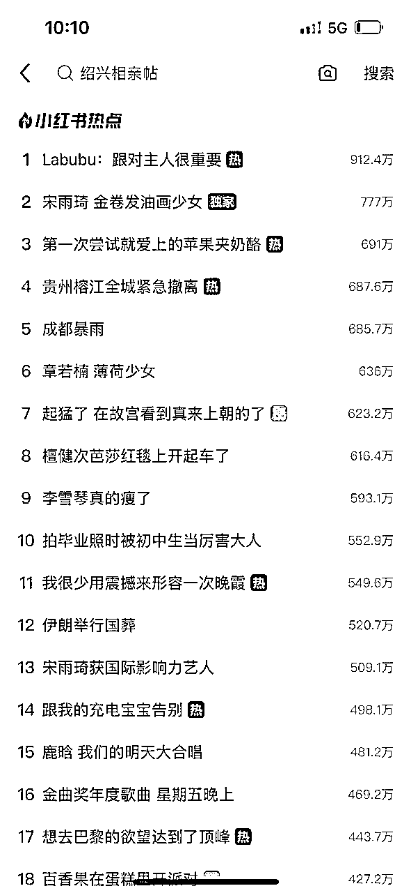
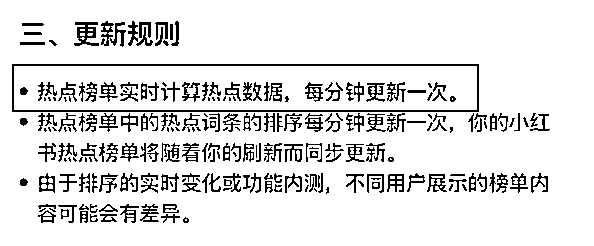
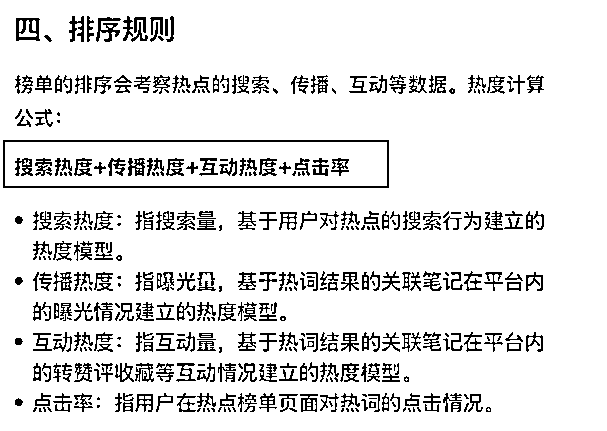
看榜单，就去思考一件事情，和你的业务能不能搭上边。强行蹭热点没意思，但是如果能搭上边，必须蹭！当天出笔记，当天爆的概率很大。
我当时在小红书热点榜上发现一个热点话题：#父母参与装修，有多惨？
我就搜索了这个话题，发现大家都在吐槽父母的审美，会买一些稀奇古怪的灯、家具和一些乱七八糟的配色，比如粉色的马桶等等。
我把大家讨论的有爆点的东西，都提取了出来，糅合成了一个视频。当天出的，当天就爆了。
后来又发了一篇类似了，也爆了。这两篇直接涨了2000多粉。
不多，因为没做人设，3w点赞那个，是新号的第一篇笔记...（视频我放下面了，大家可以看看）
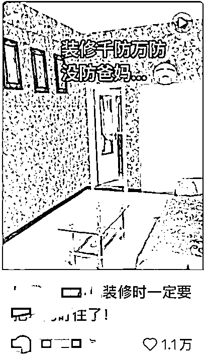
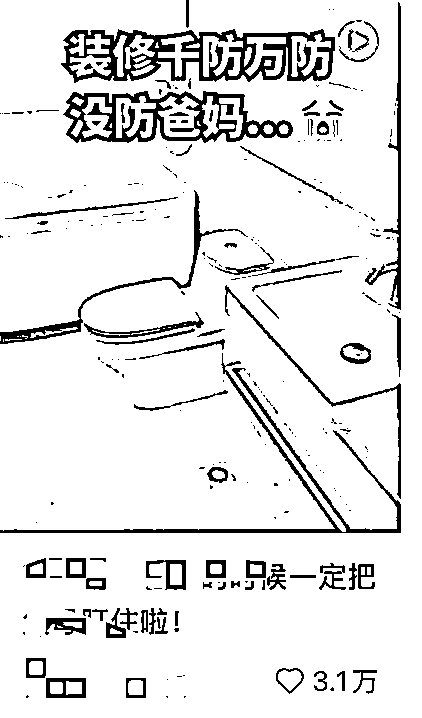
抄爆款，并且抄低粉爆款，这些话都被说烂了，我想大家都知道。但是真抄出结果的，还是少数。
原因是：
1、爆款被人抄烂了，用户审美疲劳，不再感兴趣。
2、低粉爆款具有偶然性。
3、爆款对内容或者素材有高要求，模仿难。
那我们应该抄怎么样的爆款呢？
1、这个爆款应该是一个可扩展的内容形式，并且有人通过这种内容形式持续获得爆款
2、爆的时间还比较短，市面上模仿的人还比较少
3、模仿成本低，内容制作成本相对来说不高
要具备这三个条件，很难！如果不是泡在行业里，并且对行业的内容有持续的观察，很难发现的。
而恰好，我们当时发现了！
已经不是什么秘密了，给大家看看内容形式。
...着实有点考古了，只找到内容形式，没找到那个博主和他爆的视频。
我当时的步骤是：
1、我看到这条视频，数据特别好（大概10w赞），然后点击主页看这个博主
2、这个博主的主页，都是这种内容形式的视频，并且流量都很好。我觉得可能是个可以抄的内容形式
3、然后我又搜了关键词，发现底下，就他发了这种内容形式，还没有人跟进，于是我第一个跟进。
然后就出爆款了，一条视频涨了3w粉～～
一共发了2-3次，全是爆款。
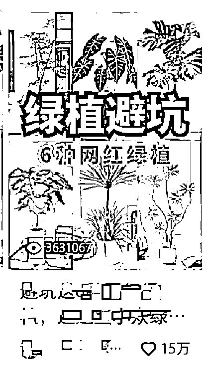
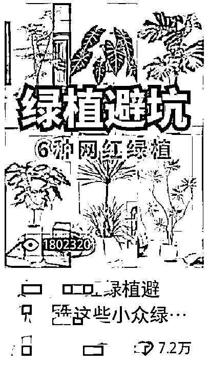
这种笔记，在当时：
1、流量大，已经有人成功验证，并持续拿到结果
2、好复制，成本很低
当然，现在已经行不通了，大家主要学习一下思路～
如果是做服务的，引流私域的，其实送资料不是一个好的选择。
但是如果你是想当博主，涨粉变现的，送资料绝对是一个不错的方法！！！
1、送资料真的很容易涨粉，别人愿意为了你的资料关注你（前提是你的资料有价值哈）
2、来的也都是精准粉，不是假粉。比如我送装修资料，来的确实是正在装修的人，人群很精准。等你下次发装修的内容，推送给粉丝，他们也愿意看，能进一步加速笔记的流量。
就这样，我又成功起了3个号。（当然大概做了4个号，成功了3个，成功率75%）
我上面说的这种内容有流量，适合起号。但是品牌方大概率还是不会来找你，因为你的内容形式没有种草属性，没办法勾起用户的购买欲。
所以，我们起号之后，开始做测评内容。
什么是测评内容，给大家看下（现在也是随处可见的）
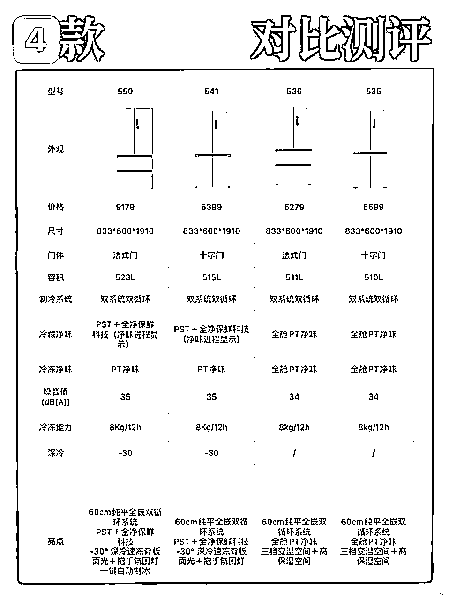
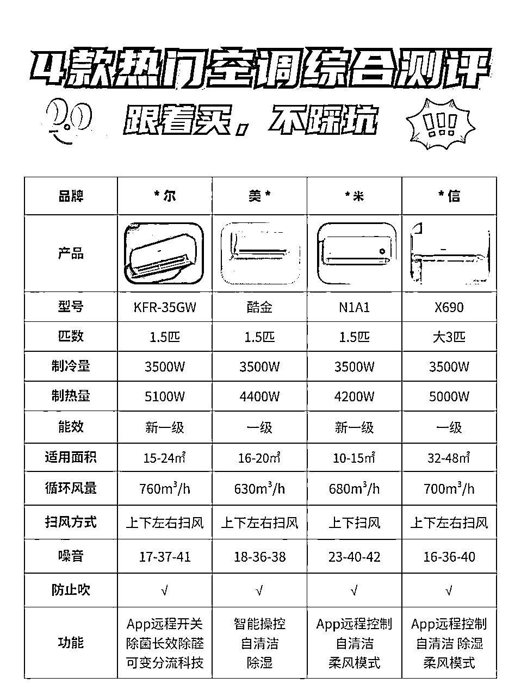
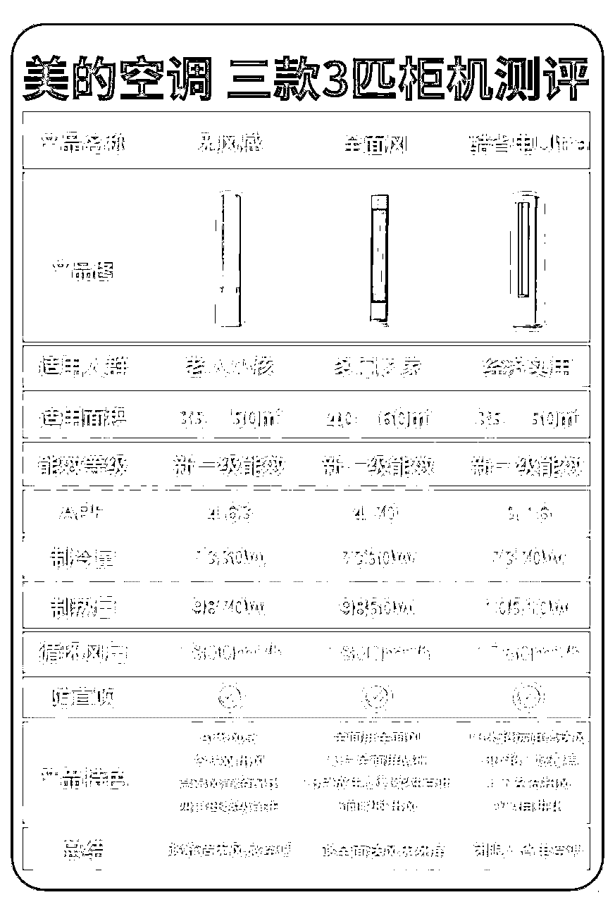
大概形式就是，首页是多款产品的测评表格，副图是选购攻略，最后做产品推荐。
这种内容形式，在当时的小红书超级火，而且种草效率很高！
我当时起号之后，就会联系相熟的品牌方，让他们来投我新号的广告，也就是这种测评内容，就比如我找了美的的品牌方，写了一篇美的空调的横测，而且品牌方都是会投流的。
一旦小爆一篇（100赞以上），我的账号就会暴露在各大品牌方眼前。做空净的，做净水器的，做冰箱的，都会来联系我进行商单合作。
我用类似的方法，把3个号都做起来了，做到了商单接不过来的地步，
其中：
一个号3.6w粉的号，单篇报价5k，到手3.5k。
一个号3w粉，单篇报价4k，到手2.8k
一个号8k粉，单篇报价2k，到手1.4k
下图是当时每天的排期表~
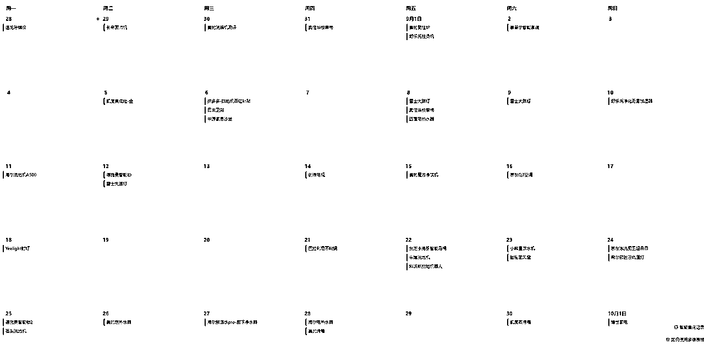
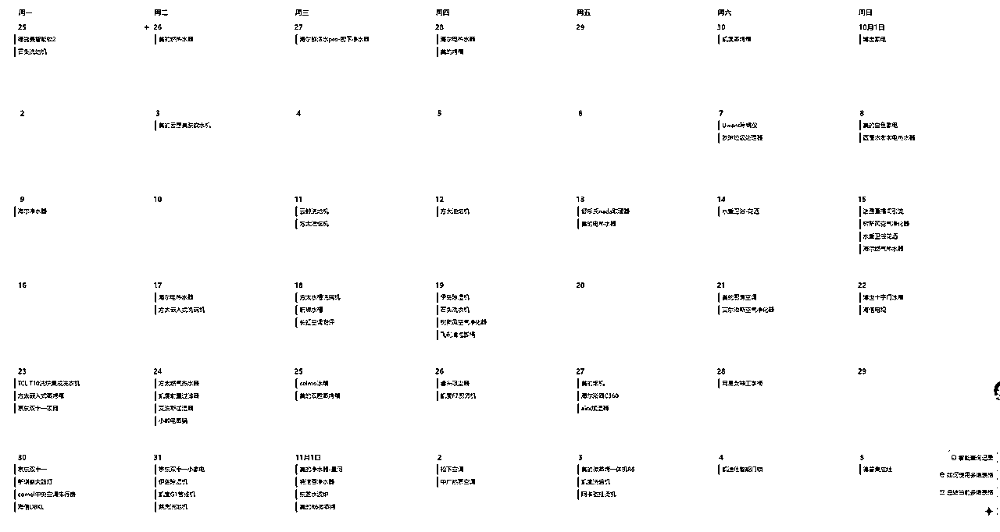
在小红书一般品牌的布局节奏是提前1-2个月开始布局内容，所以往往是双十一之前，9月份、10月份，是商单最密集的时候，11月份反而会比较空。
很多品牌都有要求一个号一天只能发一篇笔记（害怕自然流减少），我们有时候实在排不过来，会偷偷的一个号发两篇~
当时在10月份的时候，流水最高达到了15.7w，净利润达到了11w左右。
我们当时有方法，能起号，还有品牌方资源，但是因为商单接不过来，就没想过再去起新的号...这种现在看来，实在是蠢的可怜。
当时，每天都在写笔记，泡在小红书里写商单。
我起码意识到了3个异常值，这3个异常值都有机会年入百万-千万，不过我没把握😯
1、家居/装修号很容易起号成功，流量很大，并且竞争很小。
很多人还没意识到小红书的家居赛道的机会，博主少，但是品牌方多。那个时候我认识的一些小红书家居博主，大家都是商单接不过来的情况。这是第一个异常值，在上面已经有详细介绍过了。
2、我仅靠一篇笔记带货，变现了10w+
形式是这样的：当时是空气净化器，多品牌横测，然后展示测评结果，突出某一个品牌的产品。接下来，在评论区带货。
我的粉丝报我的暗号，可以在京东官方旗舰店领取优惠券，特价购买。领取优惠券并购买后，我还能拿返佣。
当时我那篇笔记霸榜空气净化器的搜索（在小红书搜空气净化器，我的笔记排第一和第二）
什么都不干的情况下，每个月拿返佣能拿2-3w，持续了4-5个月。
这个在当时其实是一个巨大的机会。类似于知乎好物和现在的B站好物，用户在平台种草后，有去电商平台购物的需求，只不过在小红书比较原始，需要报暗号，而不是一键跳转。
可惜的是，这种带货的方式，我也没多尝试，因为收入的不确定。当时比较确定的是，写一篇商单，就有3000的收入...所以主要精力投入在那上面了。
3、品牌方为我的笔记投了超20w，带来了47%的进店转化。
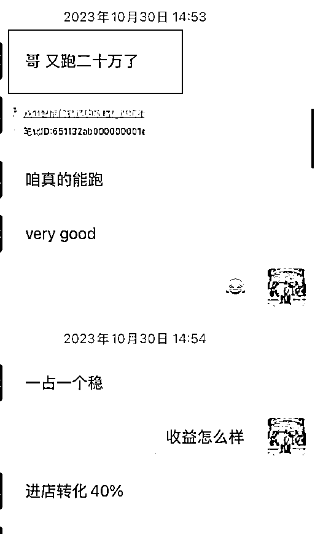
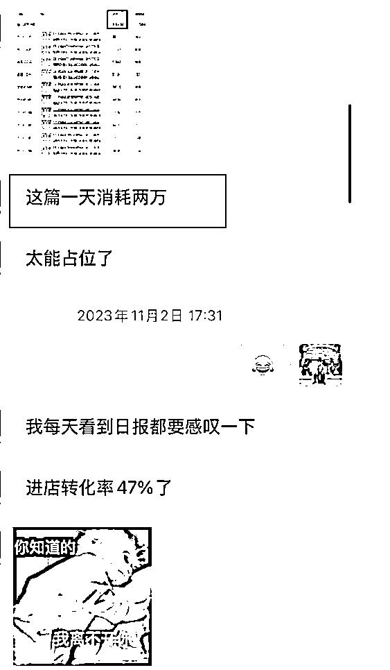
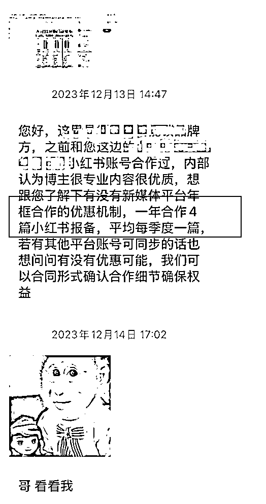
当时嚣张到什么程度，他要跟我签年框，一年合作四篇，我都不带理他的...
他们是智能锁品牌方，每一个客单价在2500以上的。进店转化率40%的意思是，100个人看过我的笔记，就会有40个人主动去淘宝搜索他们的品牌，并且进入他们的店铺。
这个转化率，做过电商和种草的小伙伴会知道有多恐怖~~
做的是什么内容？
是图文的同品牌横测。也是横测表格，然后是同一个品牌的不同产品进行横测对比，把用户聚焦在品牌上。
这个错过的是什么呢？
其实，以我的内容能力和测评能力，找一个非标的品类，完全可以自己去起一个品牌，为自己的品牌去做横测去投流。效果应该会非常不错。（我现在有业务就在做这一块）
但是，当时还是满脑子都是商单。。。嗯，再次错过红利期。
ps：现在这个玩法还能不能做？我的答案是能做！这三个异常值，第三个，是现在还能玩的，还有一定的红利。想了解的也可以看我的一篇精华帖。
23年底，到24年，小红书平台开始严打图文横测。
从刚开始的卡报备审核开始，一篇报备横测图文需要靠运气才能过审。
到后来直接蒲公英异常，限流。
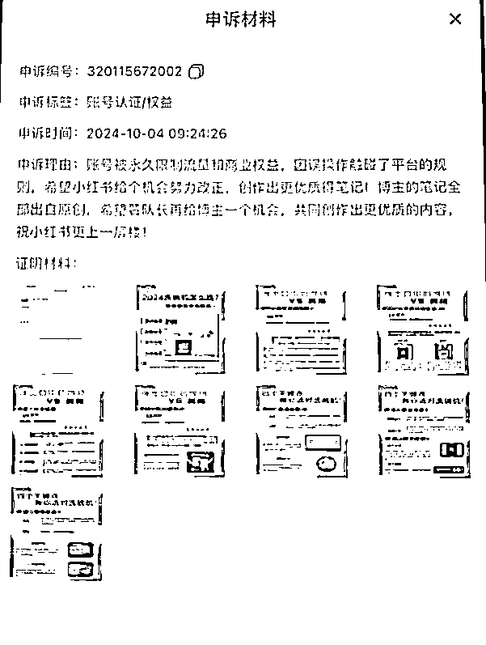
一方面，明知道违规，但是因为品牌方要求，还是不停的写横测商单。
另一方面，不停的申诉，希望能把账号的异常申诉回来。
错就错在明知道违规的情况下，还硬着头皮在那写横测商单。没有考虑转型，也没有考虑账号的权重、限流等问题。满脑子想的就是趁着最后的机会，把商单的钱赚了再说。有种竭泽而渔的意思。
ps：23、24年的时候，小红书对待横测的态度是卡审，是蒲公英异常。但是现在对待图文横测的态度很宽松，只是不给流量。不伤账号，也能进行聚光投流。
所以我说，上面说的异常值3，目前还能做。只要横测内容做的好，通过投流，能有一个非常不错的ROI。
当博主矩阵开始封号、限流的时候，我不是没有考虑过转型，甚至尝试过3-4个项目，但是最后都以失败而告终。有趣的是，每一个都踩的是不一样的坑！
上面有说过异常值2，也就是笔记评论区底下留暗号，让用户去天猫、京东报暗号下单。当时我其实有把握住这个异常的，有做一定范围的尝试，但是走错了方向。
当时的想法：
用户有优惠购买家电的需求，但是如果一直是按照评论区留暗号的形式，我没办法监控带货数量，不知道具体的带货效果（数据需要找品牌方拉取，并且不是实时的，基本是一月一次）
我没有主动权，具体带了多少完全由品牌方说了算，我也没办法通过投流等手段去放大业务，所以我当时的想法是，这种方式不可持续。
但是用户的需求是真实存在的，那我是不是可以通过另一种形式去满足用户需求？
我的方案是-家电团购。
我通过账号的流量优势，往微信导了将近1000人（3个群），引导大家通过团购购买家电。
但是折腾了几个月，就赚了5000块钱左右的利润...
后来复盘，分析原因才发现：
1、目标用户错了。我拉的虽然都是正在装修的用户，但是装修本身是一件周期很长的事，我的那批用户只是在装修，还没到购买家电的时候，所以导致家电团购的转化周期也很长。而我希望他们能尽快产生利润，这本身不合理。（意识到这一点是，我不做这个业务了，陆陆续续群里有人在问家电怎么买的。聊了之后才发现，之前他们不是不买或者不相信，只是还不需要。）
2、家电的客单价太高了。好一点的家电，都是5k，1w的。而且我们是通过微信转账交易的，需要很大的信任基础才行。信任成本过高。
3、家电型号太多了，每个用户需要的型号和功能都各不相同。当时对接用户和聊天花了我大量的时间，还转化不了...
事实上，我们在做项目的时候，一个形式跑通了，千万别自作聪明的基于用户需求颠覆整一个流程，优化也应该慢慢来。
当时的异常值2，能轻松赚钱的主要原因：
1、评论区的氛围和引导做的很好，让用户觉得是被种草的，而不是广告强营销的。
2、去京东、天猫的官方旗舰店下单，用户放心，没有信任成本
而我的方案家电团购，基本上把这2个优势，都给整没了~
商单做多了，总想着能不能自己有一个业务，能直接对接客户，一篇笔记爆了就能给我带来大量的💰。
当时正值就业困难季，我们瞄准就业市场，想提供简历、面试辅导、工作陪跑等服务，而我们当时选的切入点就是从简历修改和卖简历模版开始。
看不上卖简历模版的收入，所以一开始，我们的目标就是吸引那些想要做简历修改的人群。
不出意外，账号做了1-2个礼拜，就有一篇笔记爆了，每天开始有5-10个人进微信。这个时候，其实已经开始忙不过来了。
因为我需要销售，虽然客单价只有200-300，但是每个人的问题都很多。。。有问自己职业相关的，还会描述自己的经历，我还需要给人家做简历诊断等等，每一个人要成交，聊天至少需要半小时，慢的需要1-2个小时才有可能成交。
销售了1-2个礼拜之后，我的成交率已经能做到30-50%左右了，不缺单子，每天成交金额在600-1500之间。
但是坚持了一段时间后，还是放弃了。
放弃原因：
1、妄图一个人扛下所有，引流、销售、交付都一个人来，本身客单价就不高，把自己搞的身心俱疲
2、这个项目对销售能力和改简历能力要求高，我项目期间也试着找过别人来帮忙销售和简历修改，但是
对于销售：需要一眼看明白对方的职业、所处的阶段和遇到的问题。这个能力对于普通销售来说，要求过高。有这个能力的，也不愿意干销售的活。
对于改简历：需要有一定的文案功底和行业理解力，最好是hr出身和高管出身。这个也是对人能力要求过高，和销售一样，看的上这个活的没能力，有能力的看不上。
而我又不愿意随便找个人将就，尤其是改简历，如果改不好，会有很多客诉和售后，很麻烦。
上述，一个销售，一个交付，都太依赖我的个人能力，我当时判断整个项目的天花板有限，而且能把我耗死。我就当机立断的把项目暂停了。
归根到底，还是我在项目前期的时候，没有做市场调研和项目前景预估。
只想着这个项目能赚钱，就干了，纯愣头青一个～
上面简历的项目给了我启发，不能妄图一个人吃下所有利润，只能把自己耗死。于是我开始找项目，想找到靠谱的后端资源。
这个时候，有一个熟人找上门，他有个朋友是做全屋智能的，希望能通过小红书获客合作。
初步聊了之后，达成合作，我负责小红书内容制作和引流，他们负责销售和交付，成交后给我返佣10%。
合作意向均是口头达成，没有签任何协议，也没有针对账号、内容等财产归属的说明。不明不白就开始干了～
账号还用的是他们的。
这个项目我大概做了3个月，已经能做到通过投流稳定20-30元一个客资（全屋智能的客单价在5000-2w）
我确认客资没有问题的情况下，他们的销售转化能力大概只有3-5%，他们觉得转化率太低了，要求降返佣，降的也不多，就从10%下降到3%。。。
一下子把我气笑了～直接终止合作。
但是存在一些纠纷，因为账号是他们的，内容在账号上，虽然内容均由我产出，但是最后还是没谈拢，最后不了了之。
后来，他们还是用我搭建的账号和创作的内容，在获客和投流。只不过和我就没什么关系了～～
我猜测，应该是他们觉得返佣太高，内容和模式也已经搭建完成，都是现成的。只需要持续对现有内容进行投流，就能源源不断的获客了，也就不需要我了。所以直接把我踢出局。
现在我也还在做代运营，但是不会像之前那样这么不规范了：
1、合作之前，我们就会谈妥账号归属、内容归属、分佣返点等等
2、会谈清楚退出机制和违约机制
3、会落实到白纸黑字，保障双方利益。
很高兴你能看到这里，看了这么多，不知道我的一些踩坑经历，能不能对你有一些帮助？
最后，说一些这些年的创业心得。
下面这些话，有些大而广、甚至有些轻飘飘，可能只有经历过的人才懂👇
1、顺势而为，不要逆势。
2、选择比努力更重要，去选正在风口上的项目
3、不要再说自媒体卷了，任何时代，都缺真正优质的利他内容。
4、一定要学会梳理SOP，把80%重复繁琐的工作交出去，自己专注那20%的最重要的工作。
5、在已经成功的路径里小步快跑优化，切勿“自作聪明”地颠覆已验证的流程
6、不要吃着碗里的，看着锅里的。你已经跑通的业务才是真正适合你的好业务。不要羡慕别人，任何项目都会遇到很多问题和坑，只是没跟你说而已。
7、当你有一定结果之后，千万不要一直埋头苦干。有时候，市场调研、项目前景预估、算账、商业模式设计等等，都比埋头苦干更重要。这些不想清楚，只会白白浪费时间。
8、如果碰到和别人合作的项目，一定要谈好退出机制和违约条款，避免被别人白嫖！